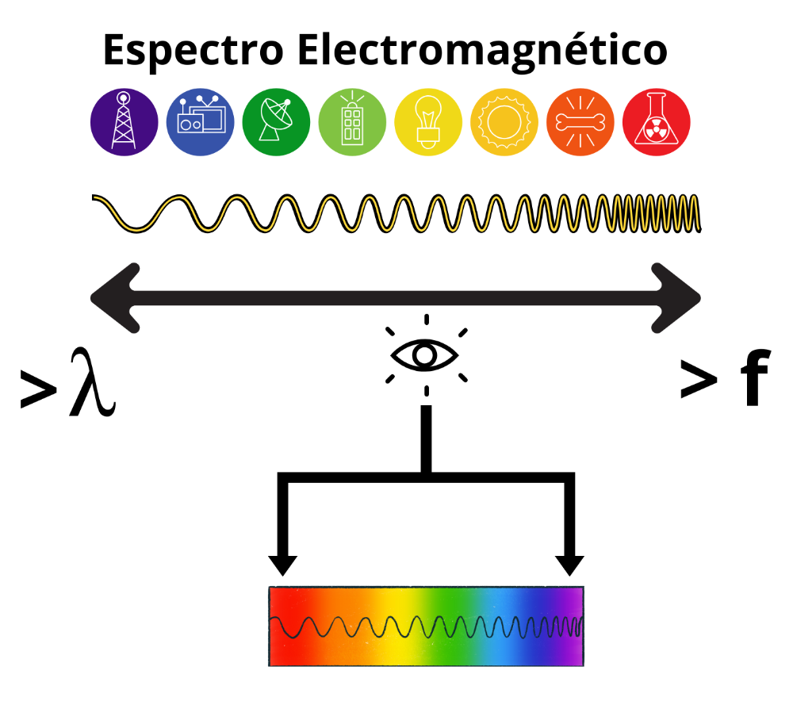

Características
Las características ondulatorias de la luz son las siguientes:
- Es una onda electromagnética.
- Es una onda transversal.
- Su velocidad de propagación en el vacío es una constante universal de valor c = 3·108 m/s. En cualquier otro medio, la velocidad de propagación es menor que en el vacío.
- La luz visible junto con otras radiaciones, que no son visibles por el ojo humano, forman parte de un amplio espectro de ondas llamado espectro electromagnético. Estas se clasifican según su frecuencia o su longitud de onda.
- La energía transportada por la onda es proporcional a la frecuencia (a mayor frecuencia, mayor energía).
